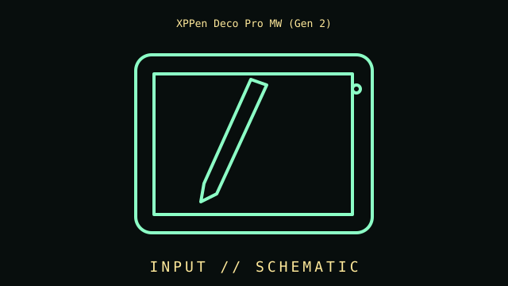

[ INDIVIDUAL COMPONENT // INPUT DEVICES ]
XPPen Deco Pro MW (Gen 2)
Medium wireless graphics tablet with 9 × 6 in active area, X3 Pro pen, USB-C/Bluetooth 5.0, and 16K pressure reporting. This entry identifies this product generation and distinguishes important interface and revision differences.

MODEL IDENTIFICATION: Check the label for the complete model, revision, regional SKU, accessories, and current manufacturer documentation before installation.
Specifications
| Catalog subcategory | Pen tablets and digitizers |
|---|---|
| Catalog identity | XPPen Deco Pro MW (Gen 2) |
| Era / family | Bluetooth pen tablet, Deco Pro Gen 2 series |
| Product-specific features | MW size has approx. 9 × 6 in (229 × 152 mm) active area; X3 Pro battery-free pen; 16,384 pressure levels and 60° tilt. Remote/accessories depend on package. |
| Interface | USB-C wired connection or Bluetooth 5.0; built-in rechargeable battery for wireless operation. MW differs in size from LW/XLW variants. |
| Compatibility guidance | Pressure, tilt, shortcuts, and application mapping require the correct XPPen driver. OS/version support varies; check current device/driver compatibility and target application. |
| Variants and service note | Distinguish MW Gen 2 from the original Deco Pro MW and other Gen 2 sizes. Pressure-level count does not mean every application exposes every level. |
Installation & compatibility checks
- Record the exact model/revision, interface mode, receiver or cable identity, firmware, driver version, and supported host before testing.
- Check connector, power, protocol, OS/driver, and application support separately; physical connector fit alone does not establish feature compatibility.
- For wireless models, preserve original receivers and pairing data. Test wired and radio modes independently where both are provided.
- Do not infer performance from manufacturer maximums alone; note settings, application, host, and measurement method for measured results.
Model notes
Distinguish MW Gen 2 from the original Deco Pro MW and other Gen 2 sizes. Pressure-level count does not mean every application exposes every level.
Pressure, tilt, shortcuts, and application mapping require the correct XPPen driver. OS/version support varies; check current device/driver compatibility and target application.
Sources & further reading
- Manufacturer — XPPen Deco Pro MW (Gen 2) product specificationsProduct reference; confirm exact variant and regional SKU.
- Manufacturer — XPPen Deco Pro MW (Gen 2) support and manualsSupport reference for drivers, manuals, and revision-specific guidance.
Manufacturer model references are authoritative for exact revisions and regional variants. Specifications can differ by package, firmware, region, and driver generation.